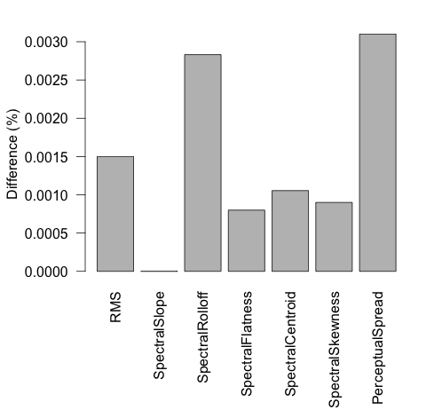
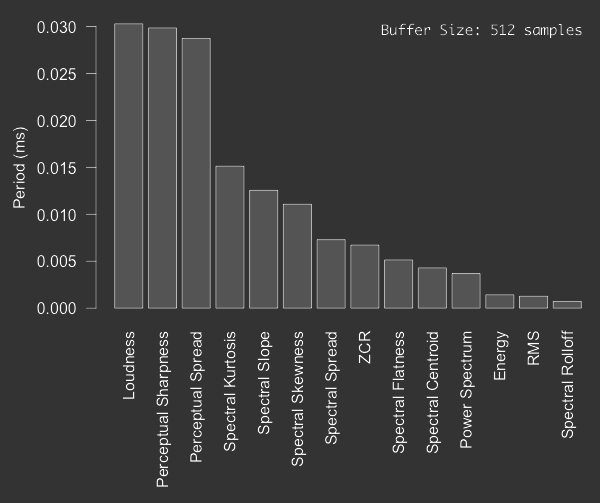

class: center, middle, inverse # Meyda: An Audio Feature Extraction Library For The Web Audio API ### Hugh Rawlinson, Nevo Segal, Jakub Fiala --- # Agenda 1. Motivation 2. Design 3. Implementation 4. Results 5. Future development --- # The vision + Audio feature extraction running in the browser + Cross-platform (+ mobile) + No need to install libraries + Fully on client side + Low-latency + Broadband speed-independent + Easy to use for Web developers --- # The design + Real-time analysis + A selection of useful temporal, spectral and perceptual features + Instantaneous and synchronized output + Output multiple features simultaneously + Easy integration with Web Audio + Maximum cross-browser compatibility --- # Integration + Simple instantiation ``` window.AudioContext = window.AudioContext || window.webkitAudioContext; var context = new AudioContext(); var tune = new Audio('audio/guitar.mp3'); window.source = context.createMediaElementSource(); var meyda = new Meyda(context,source,512); ``` <br> <br> + Simple extraction ``` var rootMeanSquare = meyda.get("rms"); ``` --- # Extraction methods + Instantaneous ``` var myFeatures = meyda.get(["rms", "loudness", "spectralCentroid"]); ``` <br> <br> + Synchronized ``` var meyda = new Meyda(context, source, 512, function(output){ myFeatures = output; }); meyda.start(["zcr", "spectralSlope"]); setTimeout(function() { meyda.stop(); }, 3000); ``` --- # FFT + AnalyserNode + *jsfft* library by Nick Jones --- # Testing <div style="width:100%; text-align:center;"></div> --- # Benchmarking <div style="width:100%; text-align:center;"></div> --- # Future Development + Adding more low-level features + *chroma, autocorrelation, octave-band analysis, constant-q, spectral flux* + Adding more windowing functions + *blackman, gaussian* + High-level features + *pitch detection/analysis, tempo analysis, onset detection, etc.* + Expand documentation + App-level features, e.g. a build system --- # Summary + Efficient audio feature extraction in the browser + Easily integrated, cross-platorm, robust & powerful + Good accuracy in comparison with native libraries + Performs well on desktop & mobile + Please contribute! --- # Thanks! ###[hughrawlinson.github.io/meyda](hughrawlinson.github.io/meyda "gh pages") ###@hughrawlinson ###@nevosegal ###@j4kubfiala